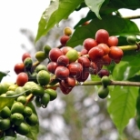

广告
了解更多关于咖啡的一切
咖啡文化
咖啡文化

咖啡历史
咖啡的历史与咖啡的酿制方式，有着同样丰富的内容。它可以追溯到一千多年以前。
星巴克更高的阿拉比卡标准
卓越咖啡，源于品质咖啡豆。

咖啡种植
咖啡在世界广泛的种植，但只在南北回归线之间的带状地区。

咖啡烘焙
颜色可以被模仿，但它独特的风味却不能。

咖啡调制
咖啡器并不是调制美味咖啡的唯一因素，“制作咖啡的四项基本原则“是适当的咖啡粉的比例、咖啡的研磨程度、水的品质和咖啡粉的新鲜程度，这比咖啡调制器更重要。
咖啡品尝
基本上，品尝咖啡就是对多种咖啡进行对照，比较和品味。当您只品尝一种咖啡，您就无法做出对照和比较。